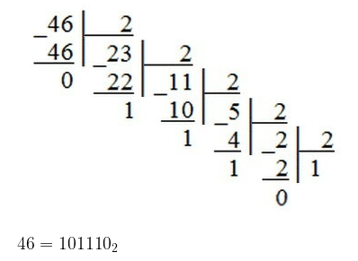
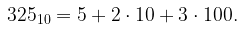
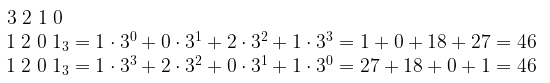

Системы счисления. Перевод из одной системы в другую
Порядковый счет в различных системах счисления
В современной жизни мы используем позиционные системы счисления, то есть системы, в которых число, обозначаемое цифрой, зависит от положения цифры в записи числа
Поскольку у нас десятичная система счисления, мы имеем 10 символов (цифр) для построения чисел. Начинаем порядковый счет: 0, 1, 2, 3, 4, 5, 6, 7, 8, 9. Цифры закончились. Мы увеличиваем разрядность числа и обнуляем младший разряд: 10. Затем опять увеличиваем младший разряд, пока не закончатся все цифры: 11, 12, 13, 14, 15, 16, 17, 18, 19. Увеличиваем старший разряд на 1 и обнуляем младший: 20. Когда мы используем все цифры для обоих разрядов (получим число 99), опять увеличиваем разрядность числа и обнуляем имеющиеся разряды: 100. И так далее.
Если система счисления имеет основание больше 10, то нам придется вводить дополнительные символы, принято вводить буквы латинского алфавита. Например, для 12-ричной системы кроме десяти цифр нам понадобятся две буквы (\rm A и \rm B):
Перевод из десятичной системы счисления в любую другую
Чтобы перевести целое положительное десятичное число в систему счисления с другим основанием, нужно это число разделить на основание. Полученное частное снова разделить на основание, и дальше до тех пор, пока частное не окажется меньше основания. В результате записать в одну строку последнее частное и все остатки, начиная с последнего
Перевод из десятичной системы онлайн:
Введите десятичное число и основание системы счисления для перевода:
Ответ:
Перевод из любой системы счисления в десятичную
Для того, чтобы научиться переводить числа из любой другой системы в десятичную, проанализируем привычную нам запись десятичного числа. Например, десятичное число 325 – это 5 единиц, 2 десятка и 3 сотни
Точно так же обстоит дело и в других системах счисления, только умножать будем не на 10, 100 и пр., а на степени основания системы счисления. Для примера возьмем число 1201 в троичной системе счисления. Пронумеруем разряды справа налево начиная с нуля и представим наше число как сумму произведений цифры на тройку в степени разряда числа. Это и есть десятичная запись нашего числа
Перевод в десятичную систему онлайн:
Введите число и основание его системы счисления
Ответ: